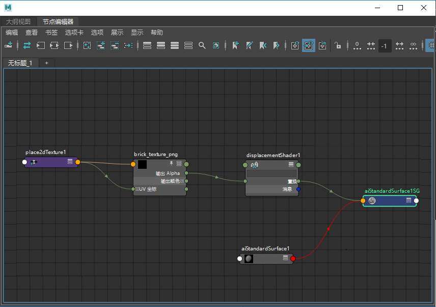

左侧：砖纹理 -> 置换 -> standard_surface 着色器的着色组。右侧：aiImage -> 置换（“输出颜色 R”(Out Color R)）。
置换贴图工具非常适合添加曲面细节，相比于常规的建模方法能够节省大量时间。
有关在 MtoA 中使用置换的场景示例，请单击此处。
对于指定给需要置换的网格的材质，置换节点必须连接到其着色组的置换属性。
请始终确保将最高质量的纹理贴图用于置换贴图。Arnold 适用于分辨率非常高的贴图，前提是这些贴图已使用 maketx 工具进行预处理。Arnold 会将这些贴图转化为 .tx 文件（经过平铺和 mipmap 处理的文件）。请参见有关 maketx 工具和 .tx 文件的页面。
在 Maya (2017) 中使用颜色管理时，应将置换贴图设置为“未经处理”(RAW)。有关详细信息，请单击此处。
可以基于每个面或每个对象设定置换设置。但是，在置换节点的 Arnold 属性中输入的任何值将覆盖这些设置。如果在每个对象上使用多个置换着色器，由于一个对象只能有一个 bounds_padding 值，因此 Arnold 会使用所有值中的最大值。自动凹凸会导致与填充相同的问题，因此只有在至少有一个置换着色器启用了它时，Arnold 才会启用它。
与置换着色器相同，MtoA 也有基于每个对象的置换选项。这意味着，对网格上所执行置换的任何更改将修改默认的置换着色器属性。如果某个场景中包含的两个对象具有同一着色器，但需要不同形状的置换值，那么这可能会非常有用。另一个示例是，某个对象具有多个着色器，但需要两个不同的“高度”(Height)值，如以下示例中所示：
将同一置换着色器指定给两个网格，但是，右侧网格的每个对象高度为 2
调整这些基于每个对象的属性时，您必须刷新 IPR（调整置换着色器属性时，无需执行此操作）。
每个对象的 MtoA 置换属性分为以下几组：
左侧网格的边界填充值为 0.5，右侧网格的边界填充值为 1（基于每个对象的设置）。
同时使用这两个属性时，应小心谨慎。置换着色器和基于每个对象的网格置换之间的关系在渲染时会有所不同。这些区别如下所示：
高度(Height)
如果设置了一定的置换比例，在增加基于每个对象的“高度”(Height)值时，将对置换产生增强效果。例如，如果在着色器中将“置换比例”(Displacement Scale)设置为 0.1，将每个对象的“高度”(Height)从 1 增加到 2，则“置换比例”(Displacement Scale)将翻倍，变成 0.2：
将网格“置换高度”(Displacement Height)设定为 2 时，“置换比例”(Displacement Scale)的效果将从 0.1 翻倍成 0.2。
边界填充(Bounds Padding)
渲染时将使用最高属性值。
标量零值(Scalar Zero Value)
如果设置了一定的置换比例，在增加基于每个对象的“标量零值”(Scalar Zero Value)时，将对置换产生附加效果。例如，如果在着色器中将“标量零值”(Scalar Zero Value)设置为 0.2，将每个对象的“标量零值”(Scalar Zero Value)设置为 0.2，则“标量零值”(Scalar Zero Value)将翻倍成 0.4：
自动凹凸(Auto Bump)
如果启用置换着色器中的“自动凹凸”(Auto Bump)，则此项将始终启用。如果禁用置换着色器中的“自动凹凸”(Auto Bump)，则 MtoA 将读取 shape autobump 属性并将其导出。